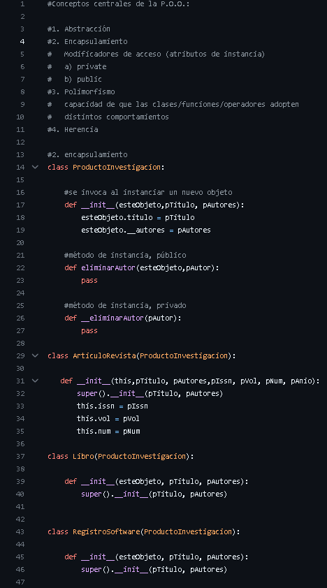
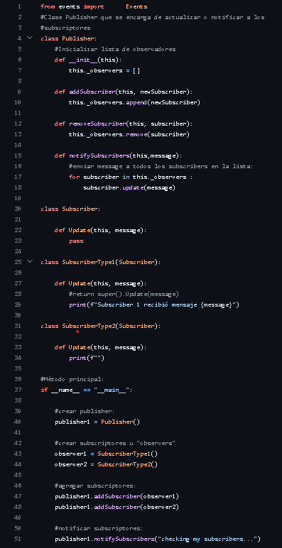
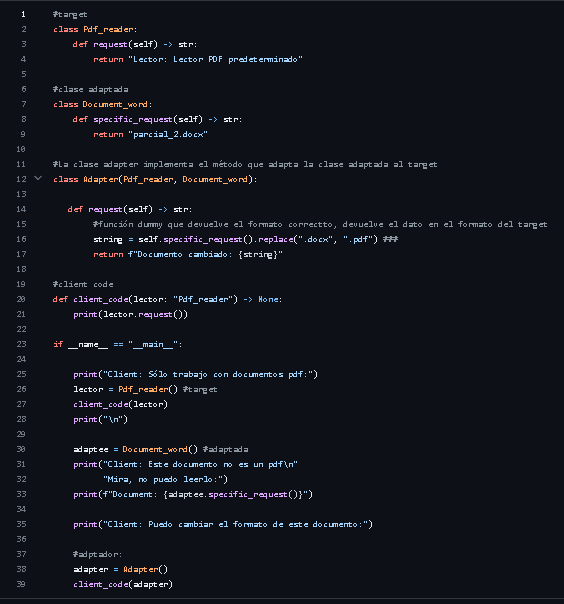

<!DOCTYPE html>
<html lang="es"></html>
<head>
  <meta charset="UTF-8">
  <meta name="viewport" content="width=device-width, initial-scale=1.0">
  <title>Unidad 2</title>
  <link rel="stylesheet" href="main.css">
</head>
<body>
<h1>Unidad 2</h1>
<p>En esta segunda unidad, nos enfocamos en aprender todo sobre la programacion orientada a objectos, donde vimos los siquietes conceptos:</p>
<p>Abstraccion: Crea clase con metodos donde se encuentran atributos</p>
<p>Herencia: sirve para generalizar una clase, es deir los atributos comunes entre dos o mas clases</p>
<p>Polimorfismo: capacidad de las clases, funciones y operadores adopten distintos comportamientos, tambien se puede sobrecargar para mostrar datos</p>
<p>Encapsulamiento: Dentro de clase asociadas obtenemos atributos tanto publicos como privados.</p>
<p>Ade mas de ver nuevos patrones de diseño que son:</p>
<p>Oserver: Permite a un objeto notificar a otros objetos sobre cambios en su estado.</p>
<p>Adapter: Permite colaborar a objetos incompatibles donde actúa como envoltorio entre dos objetos.</p>
<p>Ejemplo POO</p>

<p>Ejemplo Observer</p>

<p>Ejemplo adapter</p>

<p>Sigue explorando</p>
<div class="Botones">
    <a href="index.html"><button>Inicio</button></a>
    <a href="unidad2.html"><button>Unidad 2</button></a>
    <a href="unidad3.html"><button>Unidad 3</button></a>

</body>
</html>